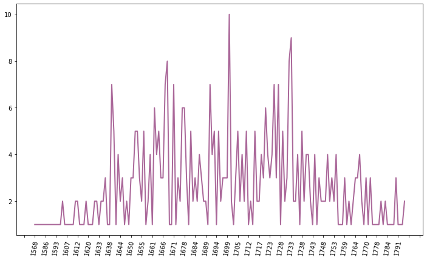

Books in Italian or translated from Italian
Contents
Books in Italian or translated from Italian#
from stcn import run_query, stcn_languages
import json
from collections import Counter
import re
import numpy as np
import pandas as pd
import seaborn as sns
import matplotlib.ticker as ticker
import matplotlib.pyplot as plt
import math
The query below creates a list of all the languages represented in the STCN.
query = '''
PREFIX xsd: <http://www.w3.org/2001/XMLSchema#>
PREFIX schema: <http://schema.org/>
PREFIX kb: <http://data.bibliotheken.nl/def#>
PREFIX rdf: <http://www.w3.org/1999/02/22-rdf-syntax-ns#>
PREFIX rdfs: <http://www.w3.org/2000/01/rdf-schema#>
SELECT ?language WHERE {
?title schema:mainEntityOfPage ?mainEntity .
?mainEntity schema:isPartOf <http://data.bibliotheken.nl/id/dataset/stcn> .
?title schema:inLanguage ?language .
}
'''
df = run_query(query)
count_languages = Counter(df['language.value'])
for language,count in count_languages.most_common():
print(f'{language} ({stcn_languages[language]}): {count} title',end='')
if count>1:
print('s',end='')
print('.')
nl (Dutch; Flemish): 143753 titles.
la (Latin): 49022 titles.
fr (French): 23635 titles.
de (German): 1354 titles.
en (English): 1299 titles.
he (Hebrew): 973 titles.
grc (Greek, Ancient (to 1453)): 866 titles.
it (Italian): 578 titles.
mis (Uncoded languages): 391 titles.
es (Spanish; Castilian): 340 titles.
mul (Multiple languages): 266 titles.
nds (Low German; Low Saxon; German, Low; Saxon, Low): 198 titles.
yi (Yiddish): 149 titles.
arc (Official Aramaic (700-300 BCE); Imperial Aramaic (700-300 BCE)): 144 titles.
pt (Portuguese): 128 titles.
ar (Arabic): 96 titles.
fy (Western Frisian): 53 titles.
ms (Malay): 53 titles.
hu (Hungarian): 27 titles.
si (Sinhala; Sinhalese): 21 titles.
syr (Syriac): 17 titles.
ta (Tamil): 17 titles.
hy (Armenian): 16 titles.
lad (Ladino): 12 titles.
gez (Geez): 11 titles.
ru (Russian): 10 titles.
pl (Polish): 8 titles.
peo (Persian, Old (ca.600-400 B.C.)): 7 titles.
ang (English, Old (ca.450-1100)): 7 titles.
crp (Creoles and pidgins ): 7 titles.
dum (Dutch, Middle (ca.1050-1350)): 6 titles.
sv (Swedish): 6 titles.
got (Gothic): 5 titles.
und (Undetermined): 5 titles.
goh (German, Old High (ca.750-1050)): 4 titles.
cs (Czech): 2 titles.
zh (Chinese): 2 titles.
ca (Catalan; Valencian): 2 titles.
da (Danish): 2 titles.
gmh (German, Middle High (ca.1050-1500)): 1 title.
mg (Malagasy): 1 title.
fro (French, Old (842-ca.1400)): 1 title.
tr (Turkish): 1 title.
cop (Coptic): 1 title.
oc (Occitan (post 1500); Provençal): 1 title.
The following query requests all the titles in Italian (language code ‘it’).
language_code = 'it'
query = '''
PREFIX xsd: <http://www.w3.org/2001/XMLSchema#>
PREFIX schema: <http://schema.org/>
PREFIX kb: <http://data.bibliotheken.nl/def#>
PREFIX rdf: <http://www.w3.org/1999/02/22-rdf-syntax-ns#>
PREFIX rdfs: <http://www.w3.org/2000/01/rdf-schema#>
SELECT * WHERE {
?title schema:mainEntityOfPage ?mainEntity .
?mainEntity schema:isPartOf <http://data.bibliotheken.nl/id/dataset/stcn> .
?title schema:inLanguage \''''+language_code+'''\' .
}
'''
print(query)
df = run_query(query)
nr_titles = df.drop_duplicates(subset="title.value", keep="last").shape[0]
PREFIX xsd: <http://www.w3.org/2001/XMLSchema#>
PREFIX schema: <http://schema.org/>
PREFIX kb: <http://data.bibliotheken.nl/def#>
PREFIX rdf: <http://www.w3.org/1999/02/22-rdf-syntax-ns#>
PREFIX rdfs: <http://www.w3.org/2000/01/rdf-schema#>
SELECT * WHERE {
?title schema:mainEntityOfPage ?mainEntity .
?mainEntity schema:isPartOf <http://data.bibliotheken.nl/id/dataset/stcn> .
?title schema:inLanguage 'it' .
}
print( f'The STCN has {nr_titles} titles containing texts in {stcn_languages[language_code]}.')
The STCN has 578 titles containing texts in Italian.
Titles in Italian#
For each of these titles, we collect data about the following aspects:
title
author
publisher
place of publication
year of publication
subject
query = '''
PREFIX xsd: <http://www.w3.org/2001/XMLSchema#>
PREFIX schema: <http://schema.org/>
PREFIX kb: <http://data.bibliotheken.nl/def#>
PREFIX rdf: <http://www.w3.org/1999/02/22-rdf-syntax-ns#>
PREFIX rdfs: <http://www.w3.org/2000/01/rdf-schema#>
SELECT * WHERE {
?resource schema:mainEntityOfPage ?mainEntity .
?mainEntity schema:isPartOf <http://data.bibliotheken.nl/id/dataset/stcn> .
?resource schema:inLanguage \''''+language_code+'''\' .
?resource schema:publication ?publ .
?resource schema:name ?title .
OPTIONAL {
?resource schema:alternateName ?alt_title . }
OPTIONAL {
?resource schema:author ?author_node .
?author_node schema:author ?author_info .
?author_info rdfs:label ?author_name . }
OPTIONAL {
?resource schema:inLanguage ?language . }
OPTIONAL {
?publ schema:startDate ?publ_year .
?publ schema:description ?imprint .
?publ schema:publishedBy ?publisher .
?publisher schema:name ?publ_name .
?publisher schema:location ?location_node .
?location_node schema:address ?address .
?address schema:addressLocality ?place .
}
OPTIONAL {
?resource schema:about ?subject .
?subject skos:prefLabel ?subject_label .
}
}
'''
print(query)
PREFIX xsd: <http://www.w3.org/2001/XMLSchema#>
PREFIX schema: <http://schema.org/>
PREFIX kb: <http://data.bibliotheken.nl/def#>
PREFIX rdf: <http://www.w3.org/1999/02/22-rdf-syntax-ns#>
PREFIX rdfs: <http://www.w3.org/2000/01/rdf-schema#>
SELECT * WHERE {
?resource schema:mainEntityOfPage ?mainEntity .
?mainEntity schema:isPartOf <http://data.bibliotheken.nl/id/dataset/stcn> .
?resource schema:inLanguage 'it' .
?resource schema:publication ?publ .
?resource schema:name ?title .
OPTIONAL {
?resource schema:alternateName ?alt_title . }
OPTIONAL {
?resource schema:author ?author_node .
?author_node schema:author ?author_info .
?author_info rdfs:label ?author_name . }
OPTIONAL {
?resource schema:inLanguage ?language . }
OPTIONAL {
?publ schema:startDate ?publ_year .
?publ schema:description ?imprint .
?publ schema:publishedBy ?publisher .
?publisher schema:name ?publ_name .
?publisher schema:location ?location_node .
?location_node schema:address ?address .
?address schema:addressLocality ?place .
}
OPTIONAL {
?resource schema:about ?subject .
?subject skos:prefLabel ?subject_label .
}
}
df = run_query(query)
print(df.shape)
(2456, 36)
The cell below print information that was requested about the first twenty titles.
for i,row in df.drop_duplicates(subset='resource.value', keep="first").sort_values(by='publ_year.value').iloc[:20].iterrows():
print(f"{row['resource.value']}\nTitle: {row['title.value']}\nPlace of publication: {row['place.value']}\nYear: {row['publ_year.value']}\n")
http://data.bibliotheken.nl/id/nbt/p427507464
Title: Dictionaire, colloqves ov dialogves en qvatre langves flamen, françois, español, & italien [...].
Place of publication: Gent
Year: 1568
http://data.bibliotheken.nl/id/nbt/p424370913
Title: Exercitatio alphabetica nova et utilissima, variis expressa lingvis et characteribvs.
Place of publication: Antwerpen
Year: 1569
http://data.bibliotheken.nl/id/nbt/p427507502
Title: Dictionaire, colloqves ov dialogves en qvatre langves flamen, françois, espaignol, & italien [...].
Place of publication: Antwerpen
Year: 1573
http://data.bibliotheken.nl/id/nbt/p409609145
Title: Colloqves ov dialogves avec vn dictionaire en six langues: flamen, anglois, alleman, françois, espaignol, & italien [...].
Place of publication: Antwerpen
Year: 1576
http://data.bibliotheken.nl/id/nbt/p427502519
Title: Dictionariolvm hexaglosson cum colloquijs aliquot sex linguarum Latinè, Germanicè, Belgicè, Gallicè, Hispanicè, Italicè.
Place of publication: Antwerpen
Year: 1585
http://data.bibliotheken.nl/id/nbt/p114483132
Title: Annotationi di Scipio Gentili sopra La Gierusalemme liberata di Torquato Tasso
Place of publication: Leiden
Year: 1586
http://data.bibliotheken.nl/id/nbt/p427501490
Title: Colloqvia et dictionariolvm septem lingvarvm, Belgicæ, Anglicæ, Tectonicæ; Latinæ, Italicæ, Hispanicæ, Gallicæ [...].
Place of publication: Luik
Year: 1589
http://data.bibliotheken.nl/id/nbt/p385907680
Title: De poetische vverken.
Place of publication: Antwerpen
Year: 1590
http://data.bibliotheken.nl/id/nbt/p427501687
Title: Colloqvia et dictionariolvm septem lingvarvm, Belgicæ, Anglicæ, Tevtonicæ; Latinæ, Italicæ, Hispanicæ, Gallicæ [...].
Place of publication: Luik
Year: 1591
http://data.bibliotheken.nl/id/nbt/p408752246
Title: Colloqvia et dictionariolvm septem lingvarvm, Belgicæ, Anglicæ, Tevtonicæ; Latinæ, Italicæ, Hispanicæ, Gallicæ [...].
Place of publication: Padova
Year: 1592
http://data.bibliotheken.nl/id/nbt/p235704806
Title: Colloqvia et dictionariolvm septem lingvarvm, Belgicæ, Anglicæ, Tevtonicæ, Latinæ, Italicæ, Hispanicæ, Gallicæ [...].
Place of publication: Leiden
Year: 1593
http://data.bibliotheken.nl/id/nbt/p427501709
Title: Colloqvia et dictionariolvm septem lingvarvm, Belgicæ, Anglicæ, Tevtonicæ, Latinae, Italicae, Hispanicae, Gallicae [...].
Place of publication: Luik
Year: 1597
http://data.bibliotheken.nl/id/nbt/p079311377
Title: Dictionario coloqvios, o dialogos en qvatro lengvas, flamenco, frances, espan̄ol y italiano [...].
Place of publication: Amsterdam
Year: 15XX
http://data.bibliotheken.nl/id/nbt/p314816526
Title: Il primo libro de madrigali a cinqve voci.
Place of publication: Leiden
Year: 1600
http://data.bibliotheken.nl/id/nbt/p315960930
Title: Mvsica miscella, cioè mescolanza di madrigali, canzoni, e villanelle in lingva Frisica, à quatro e cinque voci.
Place of publication: Franeker
Year: 1602
http://data.bibliotheken.nl/id/nbt/p830189661
Title: El paternostro de gli spagnvoli. Ofte Rhijm-gedicht, so in Duytsch, als Italiaens, vervatende t'goe-leven vande Spaignaerden.
Place of publication: Enkhuizen
Year: 1602
http://data.bibliotheken.nl/id/nbt/p319002861
Title: Nervi d'Orfeo, di eccellentiss. avtori: A cinqve et sei voci
Place of publication: Leiden
Year: 1605
http://data.bibliotheken.nl/id/nbt/p831249749
Title: Historia de la vita e de la morte de l'illustriss. signora Giovanna Graia.
Place of publication: Middelburg
Year: 1607
http://data.bibliotheken.nl/id/nbt/p306161907
Title: Dictionario coloqvios, o dialogos en qvatro lengvas, flamenco, frances, espan̄ol y italiano [...].
Place of publication: Rotterdam
Year: 1608
http://data.bibliotheken.nl/id/nbt/p058838457
Title: Apophthegmata Græca, Latina, Italica, Gallica, Hispanica.
Place of publication: Leiden
Year: 1609
Create JSON#
To make the analysis easier, the metadata are converted to JSON.
def year_publication(year_str):
if re.search( r'\d{4}' , str(year_str) ):
return int(year_str)
else:
return np.nan
df['year'] = df['publ_year.value'].apply(year_publication)
unique_ids = df.sort_values('year')['resource.value'].unique()
data = []
def print_value(value):
if pd.isna(value):
return ''
else:
return value
def get_values(df,field,fields_dict):
rows = df.drop_duplicates(field)
all_rows = []
for i,row in rows.iterrows():
values = dict()
for f in fields_dict:
values[fields_dict[f]] = print_value(row[f])
all_rows.append(values)
return all_rows
for resource in unique_ids:
record = dict()
record['ppn'] = resource
#print(resource)
df_resource = df[ df['resource.value'] == resource ]
record['title'] = df_resource.iloc[0]['title.value']
record['alternative_title'] = df_resource.iloc[0]['alt_title.value']
record['year'] = df_resource.iloc[0]['publ_year.value']
## Publishers
unique_id = 'publisher.value'
fields_dict = { 'publisher.value':'ppn',
'publ_name.value':'name'
#'place.value':'place'
}
all_publishers = get_values(df_resource,unique_id,fields_dict)
record['publishers'] = all_publishers
## Subjects
unique_id = 'subject.value'
fields_dict = {'subject.value':'ppn',
'subject_label.value':'label'}
all_subjects = get_values(df_resource,unique_id,fields_dict)
record['subjects'] = all_subjects
## Authors
unique_id = 'author_info.value'
fields_dict = {'author_info.value':'ppn',
'author_name.value':'name' }
all_authors = get_values(df_resource,unique_id,fields_dict)
record['authors'] = all_authors
## Languages
unique_id = 'language.value'
fields_dict = {'language.value':'code' }
all_languages = get_values(df_resource,unique_id,fields_dict)
record['languages'] = all_languages
data.append(record)
with open('stcn_data.json','w',encoding='utf-8') as out:
out.write(json.dumps(data,indent=4))
f = open('stcn_data.json')
json_data = json.load(f)
f.close()
Total number of books per year#
We can then begin to analyse the collection of titles. In which years have these books been published?
years = Counter()
invalid = []
for book in json_data:
if re.search(r'\d{4}',str(book['year'])):
years.update([book['year']])
else:
invalid.append(book['year'])
for year in set(invalid):
print(f"\'{year}\' is not a valid year.")
'nan' is not a valid year.
'16XX' is not a valid year.
'178X' is not a valid year.
'170X' is not a valid year.
'15XX' is not a valid year.
'168X' is not a valid year.
'177X' is not a valid year.
'176X' is not a valid year.
'17XX' is not a valid year.
'174X' is not a valid year.
'165X' is not a valid year.
'171X' is not a valid year.
'175X' is not a valid year.
'173X' is not a valid year.
'172X' is not a valid year.
'166X' is not a valid year.
'179X' is not a valid year.
x_axis = list(years.keys())
y_axis = list(years.values())
fig = plt.figure( figsize = ( 12, 7))
ax = sns.lineplot( x= x_axis, y= y_axis,
color= '#AA6799', linestyle='solid',linewidth=2 )
ax.xaxis.set_major_locator(ticker.MultipleLocator(5))
plt.xticks(rotation= 80)
plt.show()

Subjects#
def singular_plural(noun,number):
if number>1:
return noun+'s'
else:
return noun
subjects = Counter()
for book in json_data:
subject_desc = ''
for subject in book['subjects']:
if re.search( r'\w+' , subject['label'] ):
subjects.update([subject['label']])
for s,i in subjects.most_common():
print(f"{s}: {i} " + singular_plural('title',i) )
Dramaturgy and Musicology: 166 titles
Italian language and literature: 162 titles
French language and literature: 40 titles
History (Italy): 40 titles
Art forms: 24 titles
History (Europe): 22 titles
Languages (general): 21 titles
History (Netherlands): 20 titles
Theology (church history): 19 titles
Dutch language and literature: 16 titles
History (general): 16 titles
Political science: 15 titles
Latin language and literature: 14 titles
History (France): 14 titles
Theology (practical): 12 titles
History (antiquity): 11 titles
Spanish language and literature: 9 titles
History (Spain, Portugal): 9 titles
History (Great Britain and Ireland): 9 titles
German language and literature: 9 titles
Civil engineering: 8 titles
History (Germany, Central Europe): 8 titles
Public and social administration: 7 titles
Law: 6 titles
General works: 6 titles
Theology (Christian doctrine): 6 titles
Documentary information: 5 titles
Philosophy: 5 titles
Education: 4 titles
Medicine: 4 titles
Theology (Bible and Bible interpretation): 4 titles
History (Asia): 4 titles
Science (general): 3 titles
Economics: 3 titles
Mathematics: 2 titles
History (Scandinavia): 2 titles
Sociology: 2 titles
History (South-eastern Europe): 2 titles
English language and literature: 1 title
Exact sciences in general: 1 title
Theology (general): 1 title
Linguistics (general): 1 title
Other languages and literatures: 1 title
History (Africa): 1 title
Greek language and literature: 1 title
Theology (non-christian and non-jewish religions): 1 title
Business administration: 1 title
Geography: 1 title
Publishers#
Which publishers are responsible for these books?
publishers = Counter()
for book in json_data:
publ_name = ''
for publ in book['publishers']:
publ_name += publ['name'] + '; '
publ_name = re.sub(r';\s+$','',publ_name)
if re.search(r'\w+',publ_name):
publishers.update([publ_name])
for p,i in publishers.most_common():
print(f"{p}: {i} " + singular_plural('title',i))
s.n.: 63 titles
Le Cène, Michel Charles: 50 titles
Roger, Etienne: 36 titles
Witvogel, Gerard Fredrik: 18 titles
Mortier, Pieter (I): 10 titles
Elzevier, Abraham (I); Elzevier, Bonaventura: 9 titles
Marteau, Pierre: 8 titles
Gallet, George: 7 titles
s.n.; Pitteri, Francesco: 7 titles
Olofsen, Arnoldus: 7 titles
Hummel, Jean Julien: 7 titles
Elzevier, Daniel; Elzevier, Lowijs (III): 6 titles
La Feuille, Daniel de: 6 titles
Brunel, Pierre: 6 titles
s.n.; s.n.: 6 titles
Pitteri, Francesco; s.n.: 6 titles
Elzevier, Bonaventura; Elzevier, Abraham (I): 5 titles
Elzevier, Daniel: 5 titles
Elzevier, Daniel; s.n.: 5 titles
Geremia, Angelo; s.n.: 5 titles
Hovius, Henricus: 4 titles
Raphelengius, Franciscus (II): 4 titles
s.n.; Elzevier, Daniel: 4 titles
Janssonius van Waesberge, Gillis; Janssonius van Waesberge, Johannes (II): 4 titles
s.n.; Geremia, Angelo: 4 titles
Blaeu, Willem Jansz: 3 titles
s.n.; Elzevier, Abraham (I); Elzevier, Bonaventura: 3 titles
Janssonius, Johannes: 3 titles
Last, Cornelis: 3 titles
Elzevier, Johannes: 3 titles
s.n.; Last, Cornelis: 3 titles
Janssonius van Waesberge, Johannes (II); Janssonius van Waesberge, Gillis: 3 titles
Elzevier, Daniel; Jolly, Thomas: 3 titles
Roger, Johanna: 3 titles
Ipigeo, Lucas: 3 titles
Du Sauzet, Henri: 3 titles
Muntendam, Pieter (I): 3 titles
Gosse junior, Pierre: 3 titles
Hummel, Jean Julien; Hummel, Jean Julien: 3 titles
Protomastix, Severo: 3 titles
Scheltus, Jacobus (I); Scheltus, Paulus (I): 3 titles
Aertssens, Hendrick (I): 2 titles
Elzevier, Bonaventura; s.n.; Elzevier, Abraham (I): 2 titles
Elzevier, Lowijs (III); Teler, Georgio: 2 titles
Ravesteyn, Nicolaes van: 2 titles
s.n.; Matthysz, Severyn: 2 titles
Matthysz, Severyn; Boccafranca, Fran. Ma.: 2 titles
Vero, Gio. Bapt. Lucio; Blaeu, Joan (I): 2 titles
Elzevier, Lowijs (III); Elzevier, Daniel: 2 titles
Pluymer, Joost (I): 2 titles
Beverwijk, Jacob Albertsz van: 2 titles
Lorens, Almarigo; Maurry, Laurent: 2 titles
Beverwijk, Jacob Albertsz van; Wesbusch, Isaac van: 2 titles
Jolly, Thomas; Elzevier, Daniel: 2 titles
Dijck, Levijn van (I): 2 titles
Dalen, Daniel van den: 2 titles
Wolfgang, Abraham: 2 titles
Wetstein, Henricus: 2 titles
Roger, Robert: 2 titles
Jonge, Willem de: 2 titles
Blaeu, Joan (II); Blaeu, Pieter; Le Chevallier, Amédée: 2 titles
Huguetan, gebroeders; Donati, Donato: 2 titles
Halma, François: 2 titles
Boeteman, Dirk: 2 titles
Haaring, Frederik: 2 titles
Scheurleer, Hendrik: 2 titles
Steenhouwer, Josua; Uytwerf, Hermannus: 2 titles
Boussière, Hendrik: 2 titles
Broedelet, Jacobus: 2 titles
Molini, Jean-Claude; s.n.: 2 titles
Aa, Pieter van der (I): 2 titles
Salenson, Gerard van: 1 title
Plantijn, Christoffel: 1 title
Hertoghe, Joos de: 1 title
Rade, Gillis van den; Heyndricsen, Heyndrick: 1 title
s.n.; Wolfe, John: 1 title
Vervliet, Daniel: 1 title
Meiettum, Paulus: 1 title
Paets Jacobszoon, Jan; Claesz, Cornelis: 1 title
Raphelengius, Christophorus: 1 title
Chaallon, Jan Arentsz: 1 title
Rade, Gillis van den: 1 title
Haestens, Henrick Lodewijcxsoon van: 1 title
Schilders, Richard: 1 title
Waesberge, Jan van (II): 1 title
Wouw, Hillebrant Jacobsz van (I): 1 title
Ravesteyn, Paulus Aertsz van: 1 title
Fickaert, Fransoys (I): 1 title
Wachter, Jacob Pietersz: 1 title
Jansz, Jan: 1 title
Jode, Peter de: 1 title
Elzevier, Bonaventura; Meerbeeck, Jan van; Elzevier, Abraham (I): 1 title
Burghoorn, Isaac; Muliers, Carlo de: 1 title
Tongerloo, Anthony Jansz; Muliers, Carlo de: 1 title
Elzevier, Abraham (I); s.n.; Elzevier, Bonaventura: 1 title
Elzevier, Bonaventura; Elzevier, Abraham (I); Hauttus, David: 1 title
Blaeu, Cornelis; Blaeu, Joan (I): 1 title
Blaeu, Joan (I); Elzevier, Lowijs (III): 1 title
Teler, Georgio; Janssonius, Johannes: 1 title
Pas, Crispijn van de (II=de jongere); Blaeu, Joan (I); Janssonius, Johannes: 1 title
s.n.; Elzevier, Bonaventura; Elzevier, Abraham (I): 1 title
Marsce, Joris Abrahamsz van der; s.n.: 1 title
Janssonius, Jodocus: 1 title
Ravesteyn, Nicolaes van; s.n.: 1 title
Visscher, Claes Jansz: 1 title
Ghelen, Jacob van: 1 title
Matthysz, Severyn; Combi, Sebastiano; La Noù, Giovanni: 1 title
Elzevier (fictitious imprints -1712): 1 title
Blum & Conbalense; Matthysz, Severyn: 1 title
Boccafranca, Fran. Ma.; Matthysz, Severyn: 1 title
Elzevier, Daniel; Elzevier, Johannes; Sambix, Johannes van: 1 title
Hackius, Franciscus: 1 title
Winghendorp, H: 1 title
Pas, Crispijn van de (II=de jongere): 1 title
s.n.; Jolly, Thomas: 1 title
Arcerius, Joannes: 1 title
s.n.; Elzevier, Johannes: 1 title
Maurry, Laurent; Lorens, Almarigo: 1 title
Elzevier, Daniel; Elzevier, Lowijs (III); Ravesteyn, Johannes van: 1 title
Aertssens, Henderick (II): 1 title
Sarfatti Pina, Yosua; Castro Tartaz, David de: 1 title
Foppens, François (I); Vero, Battista: 1 title
Vero, Battista: 1 title
Cesari, Cesare; s.n.: 1 title
Foppens, François (I); Swingen, Hendrik: 1 title
Monte, Claudio Del: 1 title
Cesari, Cesare: 1 title
Zijll, Gijsbert van; s.n.: 1 title
Warnaer, Paulus; s.n.: 1 title
Elzevier, Daniel; Elzevier, Johannes (wed. en erven): 1 title
Blaeu, Joan (I): 1 title
Hackius, Cornelius; Hackius, Jacobus; Hackius, Petrus; Marteau, Pierre: 1 title
Winzlaick, Gullielmo: 1 title
s.n.; Blaeu, Joan (I): 1 title
s.n.; Hackius, Franciscus: 1 title
Miloco, Domenico: 1 title
Della Piazza, Giovanni Battista: 1 title
s.n.; Hackius, Jacobus; Hackius, Petrus; Hackius, Cornelius: 1 title
Marteau, Pierre; Hackius, Cornelius; Hackius, Jacobus; Hackius, Petrus: 1 title
Laurent, Jean: 1 title
Vultuergl, Roberto: 1 title
Winfelt, Balthasar; s.n.: 1 title
Desbordes, Henri: 1 title
Someren, Abraham van; Someren, Petrus van: 1 title
Leti, Gregorio: 1 title
Le Chevallier, Amédée; Blaeu, Pieter; Blaeu, Joan (II): 1 title
Jonge, Willem de; Bruyn, Dirk; Bruyn, Hendrik (I); Boeteman, Dirk: 1 title
Blaeu, Joan (II); Le Chevallier, Amédée; Blaeu, Pieter: 1 title
Blaeu, Joan (II); Blaeu, Pieter: 1 title
Longhi, Luigi: 1 title
Leers, Reinier: 1 title
Scheltus, Jacobus (I): 1 title
Rieuwertsz, Jan (II): 1 title
s.n.; Albrizzi, Girolamo: 1 title
Bulderen, Henri van: 1 title
Komarek, Giovanni Giacomo: 1 title
Egmond, Cornelis van (erven): 1 title
Donati, Donato; Huguetan, gebroeders: 1 title
Du Vivié, Johannes; Severinus, Isaac: 1 title
Stuyvesant, Johan van: 1 title
s.n.; Lorme, Jean Louis de: 1 title
Typographia reverendissimae camerae apostolicae: 1 title
Voys, Guillaume de: 1 title
Koning, Wilhelmus Engelbartus: 1 title
Wetstein, Gerard; Wetstein, Rudolf: 1 title
Haak, Dirk (I): 1 title
Bernard, Jean Frederic: 1 title
Moetjens, Adriaen (I, wed.): 1 title
Janssonius van Waesberge, Hendrik; Janssonius van Waesberge, Maria; Janssonius van Waesberge, Johannes (II, wed.); Janssonius van Waesberge, Johannes (III): 1 title
Janssonius van Waesberge, Maria; Janssonius van Waesberge, Johannes (III); Janssonius van Waesberge, Johannes (II, wed.); Janssonius van Waesberge, Hendrik: 1 title
Lom, Christiaan van: 1 title
Alberts, Rutgert Christoffel: 1 title
Vaillant, Isaac: 1 title
Janssonius van Waesberge, Maria; Janssonius van Waesberge, Hendrik; Janssonius van Waesberge, Johannes (II, wed.); Janssonius van Waesberge, Johannes (III): 1 title
Hulkenroy, Aäron van; Hulkenroy, Hermanus van (wed.): 1 title
Broedelet, Jacobus; s.n.: 1 title
Schagen, Marten: 1 title
Bernard, Jean Frederic; Picart, Bernard: 1 title
Changuion, François; Gosse, Pierre; Uytwerf, Hermannus; Hondt, Pieter de; Neaulme, Jean; Moetjens, Adriaen (II): 1 title
Mortier, Pieter (II): 1 title
Gosse, Pierre; Uytwerf, Hermannus; Hondt, Pieter de; Changuion, François; Moetjens, Adriaen (II); Neaulme, Jean: 1 title
Soudaan, Franco: 1 title
Water, Willem van de (I): 1 title
Schouten, Salomon: 1 title
Edelin, Tommaso; Pickard, Giovanni; Pickard, Giovanni; Edelin, Tommaso: 1 title
Tielenburg, Gerrit: 1 title
Edelin, Tommaso; Pickard, Giovanni; Edelin, Tommaso; Pickard, Giovanni: 1 title
Ricciotti detto Bacciccia, Carlo: 1 title
Gosse, Pierre: 1 title
Huyssteen, Arend van; Esveldt, Steven van: 1 title
Hoeven, Adrianus van: 1 title
Arkstee, Johann Caspar; Merkus, Henricus; Merkus, Henricus; Arkstee, Johann Caspar: 1 title
Blaeu, Willem: 1 title
Covens, Johannes (I): 1 title
Jolly, Jean François: 1 title
Luzac, Elie: 1 title
Gosse, Henri Albert; s.n.: 1 title
Beauregard, Isaac: 1 title
s.n.; Bassaglia, Pietro: 1 title
Van-Eet (wed.); s.n.: 1 title
Monnier, Daniel: 1 title
Hummel, Jean Julien; Olofsen, Arnoldus: 1 title
s.n.; Locatelli, Antonio: 1 title
Locatelli, Antonio; s.n.: 1 title
Hoffman, Carl Gotthold Benedictus; Staatman, Frederik: 1 title
Arkstee, Johann Caspar; Merkus, Henricus; s.n.: 1 title
Crajenschot, Theodorus: 1 title
Meyer, Pieter: 1 title
Coltellini, Marco; Graziosi, Antonio; s.n.: 1 title
s.n.; Coltellini, Marco: 1 title
s.n.; Gogué, Jean-Baptiste; Delalain, Nicolas-Augustin: 1 title
Rossi, Saverio; s.n.: 1 title
s.n.; Klootman, Mathieu: 1 title
Tetroode, Fredericus Johannes van: 1 title
Hoogeveen junior, Cornelis van: 1 title
Fernand, C.J.: 1 title
Palese, Carlo; s.n.: 1 title
Fraymann, Ernesto: 1 title
Bet, G. van der: 1 title
Betti, Giovanni; Bet, G. van der: 1 title
Thieme, Herman Carel Anton: 1 title
Byvanck, Jan Jochimsz: 1 title
Henning, Johann Henrich: 1 title
Michelet, F.G.: 1 title
Hummel, Jean Julien; Hummel, Jean Julien; s.n.: 1 title
Matthijsz, Paulus: 1 title
Dunwalt, Hendrick van (II): 1 title
Chalon, Hendrik: 1 title
Janssonius van Waesberge, Johannes (I); Weyerstraten, Elizaeus (I): 1 title
Compagnie, la: 1 title
Scheltus, Paulus (I); Scheltus, Jacobus (I): 1 title
Covens, Johannes (I); Witvogel, Gerard Fredrik: 1 title
Schmitt, Joseph: 1 title
Hummel, Burghard: 1 title
La Feuille, Daniel de; s.n.: 1 title
Claesz, Cornelis: 1 title
Authors#
authors = Counter()
for book in json_data:
author_name = ''
for author in book['authors']:
if re.search(r'\w+',author['name']):
authors.update([author['name']])
for a,i in authors.most_common():
print(f"{a}: {i} " + singular_plural('title',i))
Leti, G. (1630-1701): 39 titles
Corelli, Arcangelo (1653-1713): 36 titles
Guarini, Giovanni Battista (1538-1612): 14 titles
Boccalini, Traiano (1556-1613): 13 titles
Pallavicino, Ferrante (1615-1644): 12 titles
Vigneron, Jean (1642-1708): 12 titles
Locatelli, Pietro (1695-1764): 10 titles
Bentivoglio, Guido (1579-1644): 9 titles
Duez, Nathanaël (1609-c.1670): 9 titles
Fagiuoli, Giovanni Battista (1660-1742): 9 titles
Tasso, Torquato (1544-1595): 8 titles
Boccaccio, Giovanni (1313/14-1375): 8 titles
Rosa, Salvator (1615-1673): 8 titles
Geminiani, Francesco (1687-1762): 8 titles
Vignola, Giacomo Barozzi da (1507-1573 ; Ital. architect, schilder, architect.-theoreticus): 6 titles
Garnier, Philippe (-ca.1655): 6 titles
Albinoni, Tomaso (1671-1751): 6 titles
Hurlebusch, Conrad Friedrich (1691-1765): 6 titles
Marino, Giovanni Battista (1569-1625): 5 titles
Tartini, Giuseppe (1692-1770): 5 titles
Mahaut, Antoine (ca. 1720-ca. 1785): 5 titles
Beccaria, Cesare (1738-1794): 5 titles
Aretino, Pietro (1492-1556): 4 titles
Rousset de Missy, Jean (1686-1762): 4 titles
Tessarini, Carlo (c. 1690-1766): 4 titles
Santis, Giovanni de (17XX): 4 titles
Schuyt, Cornelis (1557-1616): 3 titles
Comenius, Jan Amos (1592-1670): 3 titles
Santa Croce, Antonio (17e E.): 3 titles
Abati, Antonio (17e eeuw): 3 titles
Ferrare du Tot, Charles de (1662 fl.): 3 titles
Ménage, G. (1613-1692): 3 titles
Gualdo Priorato, Galeazzo (1606-1678): 3 titles
Thomassin, Simon (1655-1733): 3 titles
Malpighi, Marcello (1628-1694): 3 titles
Vivaldi, Antonio (ca.1678-1741): 3 titles
Machiavelli, Niccolò (1469-1527): 3 titles
Lolli, Antonio (ca1725-1802): 3 titles
Perret, Clément (1551-): 2 titles
Conestaggio, Jeronimo (1530/40-1611/15): 2 titles
Mulerius, Carolus (ca1600-1638): 2 titles
Malvezzi, Virgilio (1595-1654): 2 titles
Galilei, Galileo (1564-1642): 2 titles
Tomasi, Tomaso Placido (1608-1658): 2 titles
Berniera, Johannes Angelus (1690-1701 fl.): 2 titles
Adimari, Lodovico (1644-1708): 2 titles
Valentini, Giuseppe (1681-1753): 2 titles
Menzini, Benedetto (1646-1704): 2 titles
Tosini, Pietro Maria (fl. 1715): 2 titles
Sarpi, Paolo (1552-1623): 2 titles
Nozeman, Jacob (1693-1745): 2 titles
Ciangulo, Niccolo (1680-1762): 2 titles
Marsigli, Luigi Ferdinando (1658-1730): 2 titles
Marcello, Benedetto (1686-1739): 2 titles
Mossi, Giovanni (1680-1742): 2 titles
Lami, Giovanni (1697-1770): 2 titles
Groneman, Albertus (c. 1710-1778): 2 titles
Lapis, Santo (1725-1765 fl): 2 titles
Goldoni, Carlo (1707-1793): 2 titles
Pichl, Václav (1741-1805): 2 titles
Alberti, Giuseppe (1685-1751): 2 titles
Mascitti, Michele (ca1664-1760): 2 titles
Venturini, Francesco (c. 1675-1745): 2 titles
Meck, Joseph (1690-1758): 2 titles
Gentili, Scipione (1563-1616): 1 title
Noot, Jan van der (ca. 1539-ná 1595): 1 title
Vredeman, Jacob (1563/64-1621): 1 title
Florio, Michelangelo (1515/18-1572): 1 title
Sweelinck, Jan Pietersz. (1561-1621): 1 title
Avontroot, Johannes Bartholomeus (1613-1630 fl.): 1 title
Jode, Pieter de (I ; 1570-1634): 1 title
Gaurico, Luca (1476-1558): 1 title
Goclenius, Rudolph (1572-1621): 1 title
Passe, Crispijn van de (de jongere ; 1594/97-1670): 1 title
Birago Avogaro, G.B.: 1 title
Roemer, Johannes Franciscus: 1 title
Ciamberlano, Lucas (1586-1641): 1 title
Santis, Tommaso de: 1 title
Baratotti, Galerana: 1 title
Banck, Laurentius (161X-1662): 1 title
Nicolai, Augustino: 1 title
Sarfatti Pina, Yosua: 1 title
Veen, Otto van (1556-1629): 1 title
Bonelli, Carlo (1612-1676): 1 title
Ugolini, Gasparo (17e eeuw): 1 title
Petrucci, Giuseppe (d.1680): 1 title
Bonarelli della Rovere, Guidubaldo (1563-1608): 1 title
Fieschi, Giovanni Luigi (ca1522-1547): 1 title
Strycker, T. (1681 fl.): 1 title
Lisola, Franz Paul von (1613-1674): 1 title
Re, Elia del (1654-1733): 1 title
Pascal, Blaise (1623-1662): 1 title
Labrosse, Joseph: 1 title
Marana, Giovanni Paolo (1642-1693): 1 title
Goüy, Jaques de: 1 title
Contarini, Camillo (1644-1722): 1 title
Courtilz de Sandras, Gatien de (1644-1712): 1 title
Meyer, Cornelis (1629-1701): 1 title
Gabrieli, Angelo: 1 title
Varo, Francisco (1627-1687 ; Dominicaan, sinoloog): 1 title
Tucci, Francesco (1666-1700 fl.): 1 title
Alexandre, Noel (1639-1724): 1 title
Sherard, James (1666-1738): 1 title
Haym, Nicola Francesco (1678-1729): 1 title
Keller, Gottfried (ca. 1650-1704): 1 title
Moretti, B.D. (1705-1722 fl.): 1 title
Besseghi, Angelo Michele (1670-1744): 1 title
Reali, Giovanni (ca. 1700 fl): 1 title
Giron, Moses (c.1667-c.1739): 1 title
Santa Croce, Prospero di (1513-1589): 1 title
Doria, Paolo Mattia (1667?-1746): 1 title
Visconti, ... (Nonce ; 1523-1565): 1 title
Fénélon, François de Salignac de la Mothe (1651-1715): 1 title
Santoro, Paolo Emilio (1560-1635): 1 title
Maier, Marco: 1 title
Fontana, Carlo (1634-1714): 1 title
Fesch, Willem de (1687-1761): 1 title
Soenius, Godfried (c. 1666-1753): 1 title
Fermi, Giovanni: 1 title
Hertel, Johann Christian (1697-1754): 1 title
Schiassi, Gaetano Maria (1698-1754): 1 title
Laurenti, Girolamo (1678-1751): 1 title
Della Casa, Giovanni (1503-1556): 1 title
Brescianello, Giuseppe Antonio (c.1690-1758): 1 title
Canini, Giovanni Angelo (1617-1666): 1 title
Händel, Georg Friedrich (1685-1759): 1 title
Gordon, Alexander (1692?-1754?): 1 title
Wassenaer Obdam, Unico van (1692-1766): 1 title
Guicciardini, Francesco (1483-1540): 1 title
Martini, Giovanni Battista (1706-1784): 1 title
Hellendaal, Pieter (1721-1799): 1 title
Algarotti, Francesco (1712-1764): 1 title
Canicola, Ciro Mario: 1 title
Palomba, Antonio (18e E): 1 title
Gelosi, J. (1752 fl.): 1 title
Giannone, Pietro (1676-1748): 1 title
Lucretius Carus, T. (c.97-55 v. Chr.): 1 title
Allegri, Alessandro (1560-1620): 1 title
Carli Rubbi, Gian Rinald (1720-1795): 1 title
Morigi, Angelo (1725-1801): 1 title
Radeker, Johannes (1738-1799): 1 title
Saint-Foix, Germain François Poullain de (1698-1776): 1 title
Petrarca, Francesco (1304-1374): 1 title
Metastasio, Pietro (1698-1782): 1 title
Robertson, W. (1721-1793): 1 title
Stampa, Giorgio Giuseppe (1767 fl.): 1 title
Mormilo, Carlo Emanuele (1767 fl.): 1 title
Rucellai, Giovanni (1475-1525): 1 title
Berni, Francesco (ca1497-1535): 1 title
Locke, John (1632-1704): 1 title
Graf, C.E. (1723-1804): 1 title
Lanjuinais, Joseph (1730?-1808): 1 title
Schrage, Anton (1738-1818): 1 title
Besozzi, Vincenzo (1783 fl.): 1 title
Ramsay, Andrew Michael (1686-1743): 1 title
Medini (conte ; 18e eeuw): 1 title
Cats, Jacob (1577-1660): 1 title
Moneti, Francesco (1635-1712): 1 title
Grazzini, Antonio Francesco (detto Il Lasca ; 1503/05-1584): 1 title
Corsini, Bartolomeo (1606-1673): 1 title
De Gamerra, Giovanni (1743-1803): 1 title
Giraldi, Giraldo: 1 title
Capilupi, Camillo (1504-1548): 1 title
Vianen, Adam van (I ; 1568-1627): 1 title
Varchi, Benedetto (1503-1565): 1 title
Ligorio, Pirro (ca. 1510-1583): 1 title
Van Kessel, François (S.J. ; begin 17e eeuw): 1 title
Mozart, Wolfgang Amadeus (1756-1791): 1 title
Bronnemüller, Elias (1666-1762): 1 title
Michelet, Friedrich Georg (c. 1730-): 1 title
Gastoldi, Gioavanni Giacomo (ca. 1550-1622): 1 title
Klein, Jacob (-1748): 1 title
Zocarini, Matteo (18e E.): 1 title
Scarlatti, Domenico (1685-1757): 1 title
Antoniotti, Giorgio (1692-1776): 1 title
Marino, Carlo Antonio (c. 1670-c. 1717): 1 title
Veracini, Francesco Maria (1690-1768): 1 title
Nardini, Pietro (1722-1793): 1 title
Heynsius, Ernesto (1710-1764): 1 title
Pasteris, Victor: 1 title
Baustetter, Johann Konrad (ca1725-ca1750 fl.): 1 title
Castrucci, Pietro (1679-1752): 1 title
Corbett, William (c.1675-1748): 1 title
Finger, Gottfried (ca1660-1730): 1 title
Scaccia, Angelo Maria (c.1690-1761): 1 title
Sammartini, Giuseppe (1695-1750): 1 title
Telemann, Georg Philipp (1681-1767): 1 title
Fodor, J. (1751-1828): 1 title
Ravenscroft, John (-vóór 1709): 1 title
Zani, Andrea (1696-1757): 1 title
Haydn, Joseph (1732-1809): 1 title
Colizzi, Johann Andrea Kauchlitz (1741/42-1808): 1 title
Sergardi, Lodovico (1660-1726): 1 title
Translations#
query = """
PREFIX xsd: <http://www.w3.org/2001/XMLSchema#>
PREFIX schema: <http://schema.org/>
PREFIX kb: <http://data.bibliotheken.nl/def#>
PREFIX rdf: <http://www.w3.org/1999/02/22-rdf-syntax-ns#>
PREFIX rdfs: <http://www.w3.org/2000/01/rdf-schema#>
PREFIX wd: <http://www.wikidata.org/entity/>
PREFIX wdt: <http://www.wikidata.org/prop/direct/>
SELECT * WHERE {
?resource schema:mainEntityOfPage ?mainEntity .
?mainEntity schema:isPartOf <http://data.bibliotheken.nl/id/dataset/stcn> .
?resource schema:translationOfWork ?trans .
?trans schema:inLanguage 'it' .
}
"""
df = run_query(query)
df.shape
(861, 6)
for i,row in df.drop_duplicates(subset='resource.value', keep="first").iloc[:20].iterrows():
print(f"{row['resource.value']}\n")
http://data.bibliotheken.nl/id/nbt/p822794179
http://data.bibliotheken.nl/id/nbt/p822873818
http://data.bibliotheken.nl/id/nbt/p830776540
http://data.bibliotheken.nl/id/nbt/p830930582
http://data.bibliotheken.nl/id/nbt/p831089032
http://data.bibliotheken.nl/id/nbt/p831253606
http://data.bibliotheken.nl/id/nbt/p831277335
http://data.bibliotheken.nl/id/nbt/p831372532
http://data.bibliotheken.nl/id/nbt/p832096911
http://data.bibliotheken.nl/id/nbt/p832453501
http://data.bibliotheken.nl/id/nbt/p832456314
http://data.bibliotheken.nl/id/nbt/p832727946
http://data.bibliotheken.nl/id/nbt/p832912816
http://data.bibliotheken.nl/id/nbt/p832913820
http://data.bibliotheken.nl/id/nbt/p832913928
http://data.bibliotheken.nl/id/nbt/p832925586
http://data.bibliotheken.nl/id/nbt/p833173103
http://data.bibliotheken.nl/id/nbt/p833190431
http://data.bibliotheken.nl/id/nbt/p833254901
http://data.bibliotheken.nl/id/nbt/p833254960